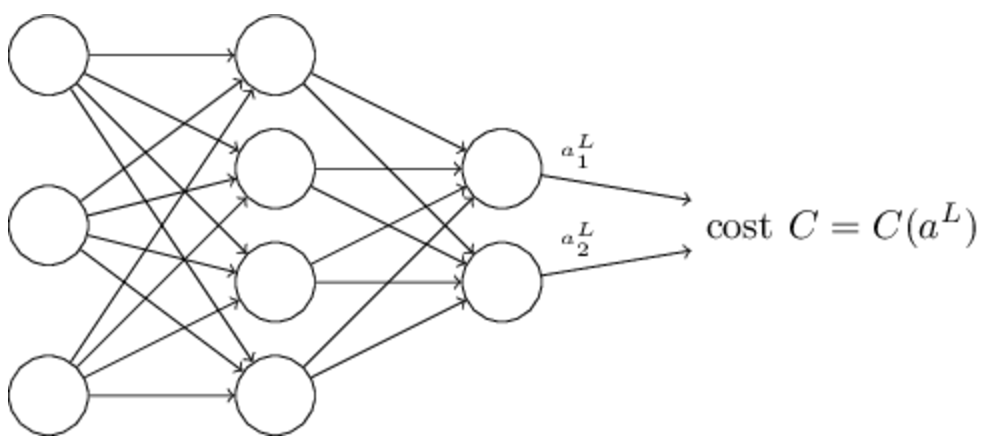

上一章中我们遗留了一个问题，就是在神经网络的学习过程中，在更新参数的时候，如何去计算损失函数关于参数的梯度。这一章，我们将会学到一种快速的计算梯度的算法：反向传播算法。
这一章相较于后面的章节涉及到的数学知识比较多，如果阅读上有点吃力的话也可以完全跳过这一章，把反向传播当成一个计算梯度的黑盒即可，但是学习这些数学知识可以帮助我们更深入的理解神经网络。
反向传播算法的核心目的是对于神经网络中的任何weight或bias计算损失函数\(C\)关于它们的偏导数\(\frac{\partial C}{\partial w}\). 这个式子能够帮助我们知道当我们改变\(w\)或\(b\)的时候，损失函数\(C\)是怎么变化的。虽然计算这个式子可能有一点复杂，但是它提供了一种自然的，直观的解释，所以说反向传播算法并不仅仅是一种快速学习算法，它提供给我们具体的见解，帮助我们理解改变神经网络的参数是如何改变神经网络行为的。所以说反向传播算法是很值得我们去深入学习的。
当然跳过这章也没问题，把反向传播当作求梯度的黑盒也并不影响阅读作者后续的章节。虽然后面会有一些涉及到本章知识的地方，不过跳过这些依然不会影响我们理解文章的主要内容。
一. 一种基于矩阵运算快速计算神经网络输出的方法
在介绍反向传播之前，先介绍怎么利用矩阵运算快速的计算神经网络输出。其实在上一章对这一块也提到过，不过不够详细。这里再介绍一下，帮助大家逐渐适应基于矩阵运算的表示方式。
我们先引入一个能够明确表示连接神经网络中某两层之间的某两个神经元的权重的符号：\(w^l_{jk}\)，它表示第\(l-1\)层的第\(k\)个神经元和第\(l\)层的第\(j\)个神经元连接的权重。例如下图中的\(w^3_{24}\)表示第二层的第4个神经元到第三层的第2个神经元的权重：
这个符号初看起来可能有点复杂冗长而且需要一点功夫去适应这样的定义。而且大多数人应该有跟我一样的疑惑就是为什么不用j表示输入，k表示输出，而是这样反其道而行之。在下文中作者将解释这样定义的原因。
同样的我们可以用类似的符号定义神经元的bias和受到激活后的输出。我们用\(b^l_j\)表示第\(l\)层第\(j\)个神经元的bias，用\(a^l_j\)表示第\(l\)层第\(j\)个神经元的输出。类似下图：
有了这些概念，我们可以把\(a^l_j\)也就是第\(l\)层第\(j\)个神经元的输出同上一层神经元的输出联系起来。
这个式子中的求和部分就是对上一层的神经元输出进行加权求和的过程。
为了用矩阵的形式重写这个式子，我们定义一个权重矩阵\(w^l\)表示与第\(l\)层所有神经元链接的权重，这个矩阵的第\(j\)行，第\(k\)列的值\(w^l_{jk}\)表示第\(l-1\)层第\(k\)个神经元与第\(l\)层第\(j\)个神经元链接的权重。同样的定义一个bias向量\(b^l\)表示第\(l\)层神经元的bias，然后\(a^l\)表示第\(l\)层神经元的输出。
借助于函数向量化的思想，就是将一个函数作用于一个向量上等价于将一个函数分别作用于该向量上每一个分量。例如对于函数\(f(x)=x^2\),有：
有了这些概念就可以将公式(23)改写为：
去掉了那些表示神经元的序号\(j\)和\(k\)，这个式子帮助我们更宏观的理解上一层神经元的输出是怎么影响下一次神经元的。我们将权重矩阵乘以上一层神经元输出，再加上这一层神经元自身的bias，再经过\(\sigma\)函数得到的就是这一层神经元的输出。
这也是作者定义\(w^l_{jk}\)时用\(k\)表示\(l-1\)层的神经元序列而不是用\(j\)表示的原因。试想一下，当我们需要计算第\(l\)层第一个神经元输出的时候，需要将矩阵\(w^l\)的第一行所有值\(w^l_{1k}\)表示的向量和向量\(a^{l-1}\)相乘，也就是加权求和，所以说这样定义更符合我们矩阵运算的规则，否则的话在进行计算的时候还需要将权重矩阵\(w^l\)转置带来不必要的麻烦。
相较于纠结神经元间的联系，用矩阵表示的话更容易理解和感受层级间的联系。而且矩阵表示还有个好处就是在实际工程中，有很多快速矩阵运算的实现。
在计算公式(25)的时候，我们可以定义一个\(l\)层的加权输入的概念：\(z^l = w^l a^{l-1} + b^l\)，就是在经过\(\sigma\)函数输出之前的部分。公式(25)于是可以表示成\(a^l = \sigma (z^l)\)。\(z^l\)当然也是一个向量，其中每个分量\(z^l_j\)表示第\(l\)层第\(j\)个神经元的加权输入。
二. 关于损失函数的两个假设
反向传播算法是为了计算损失函数的偏导数\(\frac{\partial C}{\partial w}\)和\(\frac{\partial C}{\partial b}\)，为了使算法可行，我们需要对损失函数的形式作两个假设。在介绍这些假设之前，我们先来看一个最常见的二次损失函数：
其中\(n\)是训练样本总数，对所有训练样本损失求平均，\(y(x)\)是输入为\(x\)时对应的真实的输出，而\(L\)表示神经网络的层数，也就是说\(a^L (x)\)表示的是输入为\(x\)时，神经网络最后一层输出层的输出，也就是神经网络的输出。
第一个假设是所有训练样本总的损失函数可以被表示成单个样本损失函数和的平均值，即：\(C=\frac{1}{n}\sum_x C_x\). 我们很容易可以验证这个假设对于二次损失函数成立，\(C_x = \frac{1}{2}||y-a^L||^2\)。这个假设其实大部分时候都是成立，除了对于少数比较另类的损失函数，不过本文并不涉及。
我们需要这个假设的原因是因为方向传播算法实际是对于单个样本计算偏导数\(\frac{\partial C_x}{\partial w}\)和\(\frac{\partial C_x}{\partial b}\),随后再通过对这些单样本的偏导数求平均作为\(\frac{\partial C}{\partial w}\)和\(\frac{\partial C}{\partial b}\)。事实上，在对\(w\)和\(b\)求偏导的时候，我们将输入\(x\)当作是固定值，所以方便起见，暂时将\(C_x\)写作\(C\),后面再写回来。
第二个假设是损失函数可以表示成神经网络输出的函数，即\(C = C(a^L)\)

例如，二次损失函数就满足这样的假设，因为对于一个训练样本\(x\)来说，有：
这样就表示成了输出的函数，因为对于一个输入\(x\)来说，它实际正确的输出\(y\)是个固定值，并不是我们可以修改的变量。我们可以改变的只能是通过改变weights和biases来改变神经网络的输出\(a^L\)从而影响到损失函数的值。
三. Hadamard积 - \(s\odot t\)
反向传播算法基于一些常见的线性代数操作：向量的相加，向量与矩阵的积等等。其中有一种操作不是很常见，这里简单介绍一下。假设\(s\)和\(t\)是两个相同维度的向量，我们使用\(s\odot t\)定义两个向量中对应分量相乘的操作，即\((s \odot t)_j = s_j t_j\),例如：
这样的乘法操作被称为Hadamard积或Schur积。
四. 反向传播算法背后的四个基本方程
反向传播算法是关于理解改变weights和biases是如何改变损失函数C，也就是计算\(\frac{\partial C}{\partial w^l_{jk}}\)和\(\frac{\partial C}{\partial b^l_j}\)。在介绍如何计算这些偏导数之前，先引入一个中间变量，\(\delta^l_j\)，称其为第\(l\)层第\(j\)个神经元的误差error，反向传播算法会先计算这个中间变量，随后再将其与需要的偏导数关联起来。
为了明白这个error的定义，想象在我们的神经网络中有一个小恶魔：
这个小恶魔位于第\(l\)层第\(j\)个神经元处，它会在该神经元接收到输入的时候使坏，在上一层的加权输入和传到这个神经元的时候添加一个改变量\(\Delta z^l_j\)，导致该神经元的输出就不再是\(\sigma (z^l_j)\)而变成了\(\sigma (z^l_j + \Delta z^l_j)\)。这个改变就会一直传到下去直到最后一个输出层，使得总的损失函数改变了\(\frac{\partial C}{\partial z^l_j}\Delta z^l_j\)。
现在假设这个恶魔是个好恶魔，它会通过找到合适的\(\Delta z^l_j\)来帮我们减小损失函数的值。假设\(\frac{\partial C}{\partial z^l_j}\)是一个绝对值大的数(可以是正数或者负数)，那我们可以取一个和其正负相反的一个数\(\Delta z^l_j\)来减小损失函数。但是如果\(\frac{\partial C}{\partial z^l_j}\)是一个接近0的数，这个恶魔通过影响\(z^l_j\)来减小损失函数的方式就显得力不从心了。此时，这个恶魔就会说，这个神经元已经接近最优状态了（当然这是在\(\Delta z^l_j\)是相对小的值的情况下的，我们会约束这个恶魔的能力，使其只能进行这些比较小的干扰）。这就有点类似于说损失函数在这个神经元上已经达到极值，没有继续优化的空间了。
这就给我们一种直觉说\(\frac{\partial C}{\partial z^l_j}\)可以作为该神经元error的一种评价方式。基于此，我们定义第\(l\)层第\(j\)个神经元的error为：
反向传播算法将会对每一层\(l\)计算\(\delta^l\)然后再得到对应的\(\frac{\partial C}{\partial w^l_{jk}}\)和\(\frac{\partial C}{\partial b^l_j}\)。
也许我们会有疑问为什么这个恶魔影响的是输入\(z^l_j\)而不是直接去影响输出\(a^l_j\)，那样我们就可以用\(\frac{\partial C}{\partial a^l_j}\)作为我们在神经元上error的衡量。实际上这样做并不会对结果产生影响，只是会使得反向传播算法的计算公式更复杂一点而已，所以我们继续使用\(\delta^l_j = \frac{\partial C}{\partial z^l_j}\)作为error的衡量。
接下来就要介绍反向传播算法基于的四个方程了。作者在这强调，这些方程是有难度的，一开始不理解也不要灰心。在这章中，我们会多次学习它们，作者还给出了这些方程的简单证明和伪代码实现，并且还一步步将伪代码实现成了python代码。通过本章的学习，不光是知道这些公式方程，作者还将会使我们对反向传播方程有直觉上的理解，还有就是人们是怎么发现这些方程的。在这期间，我们会不断的提及这四个方程，使我们最终将会对它有更深入的理解。
方程一：输出层的error\(\delta ^L\)
根据定义我们可以验证\(\delta^L_j = \frac{\partial C}{\partial z^L_j} = \frac{\partial C}{\partial a^L_j}\frac{\partial a^L_j}{\partial z^L_j} = \frac{\partial C}{\partial a^L_j}\sigma '(z^L_j)\)
注意到这个式子的每个部分都不难计算的到，\(z^L_j\)和\(\sigma '(z^L_j)\)在计算神经网络输出的时候可以得到，左边的部分在确定了损失函数的形式之后也可以计算得到。
公式(BP1)是针对输出层上某一个神经元而言的，为了方便反向传播计算，我们将其改写为矩阵形式：
对于这里的二次损失函数，有\(\bigtriangledown_a C = \bigtriangledown_a (\frac{1}{2}\sum_j (y_j - a^L_j)^2) = a^L - y\), 注意这里求导的过程只是针对当前分量\(j\)求导，其余的分量就为0.于是有：
方程二：用当前层error表示下一层error
这个方程虽然看上去比较复杂，但是每个部分都有很明确的解释。假设我们知道\(l+1\)层的error：\(\delta^{l+1}\)，当同这一层的权重矩阵相乘的时候就类似于将这个error传到上一层，最后再利用Hadamard积得到\(l\)层的error。详细的推导证明在下一小节中。
有了公式(BP1)和公式(BP2)我们就可以通过先计算输出层的error进而计算每一层的error。
方程三：error等价于损失函数\(C\)对bias的变化率
这说明error \(\delta^l_j\)等价于\(\frac{\partial C}{\partial b^l_j}\)。于是可以很容易将其写成：
方程四：损失函数\(C\)对weights的变化率
这个方程说明，当我们要计算某两个神经元链接的权重对损失函数影响的时候，可以先计算上一层的\(a^{l-1}_k\)和下一层的\(\delta^l_j\)。而这两个值我们根据先前的知识已经知道怎么计算了。这个方程也可以被写为：
更直观的如下图所示：
从公式(32)中可以看出来，当\(a_{in}\)很小\(a_{in}\approx 0\)的时候，\(\partial C/\partial w\)也会很小，那样这个权重的学习就会很慢，意味着在梯度下降的学习过程中，这个权重不会发生大的变化。换句话说就是，输出小的神经元的权重学习也慢。
介绍完了这四个方程，我们再来聊聊一些关于这四个方程的理解。对于输出层，考虑公式(BP1)中的\(\sigma'(z^L_j)\)，我们在第一章学习过\(\sigma\)函数的图像，知道它在\(\sigma (z^L_j)\)接近0或1的时候是趋于平的，也就是导数是趋于0的。所以我们就能得出结论，如果对于输出层的神经元，如果其输出非常大（\(\approx 1\)）或非常小（\(\approx 0\)），在这种情况下，其参数的更新是非常缓慢的。我们称这种状态的输出神经元为saturated的状态，这种状态下，参数停止更新（或更新很慢）。
根据公式（BP2）我们对其他层可以得出同样的结论，对任一处于saturated状态的神经元来说，其\(\delta^l_j\)趋向于很小的值，然后就会导致它的参数的学习会很慢。（当然要是\(w^{l+1}\delta^{l+1}\)足够大，即使乘上一个很小的数也能保证积足够大的话就不是这种情形了，不过作者这里说明的只是普遍的情况）
总之，就是一个神经元在低激活或者高激活状态，或者说在saturated状态时，它的参数的更新就会很慢。
上面的一些理解并不难从观察方程得到，但是它仍然能够帮助我们更进一步在脑海中构建神经网络模型。而且我们随后会发现，证明上述方程不需要用到任何\(\sigma\)函数的性质，所以我们可以将激活函数换成任何函数。甚至我们可以根据学习的需要设计自己的激活函数。例如，我们使用一个函数\(f\)，有\(f'>0\)恒成立，并且不会接近于0，这样就可以使神经元避免saturated的状态，就不会减慢参数的学习。在本书的后续章节，我们的确会看到很多使用自己定义的激活函数的例子，现在先让我们牢记(BP1)-(BP4)这四个方程，只有这样到时候才能明白为什么要那样修改激活函数，这样修改会造成什么样的影响。
五. 四个方程的证明(选学)
现在要开始上述四个方程的证明了，这些证明主要用到了多元函数微分的链式法则，如果对这块很熟悉的话，完全可以自己自行证明。
先来公式(BP1)的证明，这个其实在我上面介绍的时候已经证明过了，这里在介绍一下作者是怎么证明的。
公式BP1:
根据链式法则有\(\delta^L_j = \sum_k \frac{\partial C}{\partial a^L_k}\frac{\partial a^L_k}{\partial z^L_j} \quad (37)\)，但是我们知道对于第\(k\)个神经元的输出\(a^L_k\)只决定于第\(k\)个神经元的输入\(a^L_k\)，所以对于\(k \neq j\)的情况，导数为0，所以可以去掉求和符号（其他项都为0）最后有：
由于\(a^L_j = \sigma (z^L_j)\)，所以上式又可以被写为：
公式BP1就得到了证明。
现在证明BP2.根据链式法则可以得到：
又根据神经网络模型知道：
然后将其对\(z^l_j\)求导得到：
将其带入公式(42)得到：
这样就完成了BP2的证明。
BP3和BP4的证明留做练习题。
练习
问题：
证明方程BP3和BP4
答案：
BP3的证明：
根据链式法则展开为\(\frac{\partial C}{\partial b^l_j} = \sum_k \frac{\partial C}{\partial z^l_k} \frac{\partial z^l_k}{\partial b^l_j} = \sum_k \delta^l_k \frac{\partial (\sum_j w^l_{kj}a^{l-1}_j + b^l_k)}{\partial b^l_j} = \delta^l_j * 1 = \delta^l_j\)
因为只有在\(k = j\)的时候右边部分才为1，其余均为0，方程BP3就得到了证明。
BP4的证明：
跟BP3几乎一模一样，为了避免误解，这里的下标稍微改一下，\(\frac{\partial C}{\partial w^l_{jk}} = \sum_a \frac{\partial C}{\partial z^l_a} \frac{\partial z^l_a}{\partial w^l_{jk}} = \sum_a \delta^l_a \frac{\partial (\sum_b w^l_{ab}a^{l-1}_b + b^l_a)}{\partial w^l_{jk}}\)
很显然，\(\frac{\partial b^l_a}{w^l_{jk}}=0\),然后另一部分只有在\(a=j,b=k\)时才不为0，此时就可以去掉求和符号得到：
方程BP4证明完毕。
六. 反向传播算法
有了这些方程，我们再看看反向传播算法是如何进行梯度计算的。
-
设置输入层的输出\(a^1\)为原始输入\(x\)
-
前向依次计算\(l=2,3,...,L\)层的加权输入和输出:\(z^l = w^la^{l-1}+b^l\)和\(a^l = \sigma (z^l)\)
-
输出层的error \(\delta^L\): \(\delta^L = \bigtriangledown_a C \odot \sigma '(z^L)\)
-
反向传播依次计算\(l=L-1, L-2, ..., 2\)层的error：\(\delta^l = ((w^{l+1})^T\delta^{l+1}) \odot \sigma '(z^l)\)
-
根据上面的结果计算各个梯度：\(\frac{\partial C}{\partial w^l_{jk}} = a^{l-1}_k\delta^l_j\)和\(\frac{\partial C}{\partial b^l_j} = \delta^l_j\)
从算法的流程也可以明白为什么它被称为反向传播算法，因为我们是从最后一层的\(\delta^L\)开始反向计算前面的\(\delta^l\)的。因为损失函数是关于神经网络输出的函数，所以为了得到损失函数关于前面层的参数的梯度就需要不断的应用求导链式法则，一层层向前推导得到我们需要的关系的表达式。
练习
问题一：
假设我们对神经网络中的一个神经元进行替换，使其激活函数不再是sigmoid函数，而是\(f(\sum_jw_jx_j + b)\), 这种情况下反向传播算法应该如何调整？
答案：
只需要修改用到激活函数的部分，首先是该神经元的输出\(a^l_j\)用函数\(f\)求，其次就是上面在求\(\sigma '(z^l)\)的时候，现在改为函数\(f'(z^l_j)\)（只影响其中一个分量，因为只替换了一个神经元）
问题二：
将神经网络中所有的sigmoid激活函数替换为线性激活函数\(\sigma (z) = z\)，写出该情形下的反向传播算法。
答案：
使用这个激活函数的话，一个显著特征就是\(a=z\)和\(\sigma '(z^L) = \vec{1}\)，然后就可以去掉\(\odot\)操作，因为右边的向量各分量都为1。其实算法没什么变化，只是这些特殊情况的激活函数会简化算法中某些式子。
之前已经提到过，反向传播算法是基于每一个样本计算梯度的即\(C = C_x\)。实际中，经常会涉及到将多个梯度的情况，例如在随机梯度下降算法中使用反向传播。例如给定mini-batch大小为\(m\)，那么算法的做法是：
-
先针对mini-batch中每一个训练样本进行上述反向传播的计算，计算各个参数（这样就会出现m组参数）
-
在梯度下降更新参数的时候对m组梯度取平均后再应用到更新参数的公式中：
七. 反向传播算法的代码实现
理解了反向传播算法后，我们再来看前一章相关代码就更容易理解了。
1 2 3 4 5 6 7 8 9 10 11 12 13 14 15 16 | classNetwork(object):
defupdate_mini_batch(self, mini_batch, eta):
## Update the network's weights and biases by applying
## gradient descent using backpropagation to a single mini batch.
## The "mini_batch" is a list of tuples "(x, y)", and "eta"
## is the learning rate.
nabla_b = [np.zeros(b.shape) for b inself.biases]
nabla_w = [np.zeros(w.shape) for w inself.weights]
for x, y in mini_batch:
delta_nabla_b, delta_nabla_w =self.backprop(x, y)
nabla_b = [nb+dnb for nb, dnb in zip(nabla_b, delta_nabla_b)]
nabla_w = [nw+dnw for nw, dnw inzip(nabla_w, delta_nabla_w)]
self.weights = [w-(eta/len(mini_batch))*nw
for w, nw in zip(self.weights, nabla_w)]
self.biases = [b-(eta/len(mini_batch))*nb
for b, nb in zip(self.biases, nabla_b)]
|
之前已经说过，主要的计算部分在第11行的backprop函数，它返回的其实就是在当前样本下的\(\frac{\partial C_x}{\partial b^l_j}\)和\(\frac{\partial C_X}{\partial w^l_{jk}}\)，然后nabla_b和nabla_w是讲对应位置的结果叠加，以供在第14行和第16行更新参数时用到平均梯度时使用。下面是backprop函数的代码：
1 2 3 4 5 6 7 8 9 10 11 12 13 14 15 16 17 18 19 20 21 22 23 24 25 26 27 28 29 30 31 32 33 34 35 36 37 38 39 40 41 42 43 | classNetwork(object):
def backprop(self, x, y):
## Return a tuple "(nabla_b, nabla_w)" representing the
## gradient for the cost function C_x. "nabla_b" and
## "nabla_w" are layer-by-layer lists of numpy arrays, similar
## to "self.biases" and "self.weights".
nabla_b = [np.zeros(b.shape) for b in self.biases]
nabla_w = [np.zeros(w.shape) for w inself.weights]
## feedforward
activation = x
activations = [x]
## list to store all the activations, layer by layer
zs = []
## list to store all the z vectors, layer by layer
for b, w in zip(self.biases, self.weights):
z = np.dot(w, activation)+b 16 zs.append(z)
activation =sigmoid(z)
activations.append(activation)
## backward pass
delta = self.cost_derivative(activations[-1], y)
sigmoid_prime(zs[-1]) 22 nabla_b[-1] = delta
nabla_w[-1] = np.dot(delta, activations[-2].transpose())
## Note that the variable l in the loop below is used a little
## differently to the notation in Chapter 2 of the book. Here,
## l = 1 means the last layer of neurons, l = 2 is the
## second-last layer, and so on. It's a renumbering of the
## scheme in the book, used here to take advantage of the fact
## that Python can use negative indices in lists.
for l in xrange(2, self.num_layers):
z = zs[-l] 32 sp =sigmoid_prime(z)
delta = np.dot(self.weights[-l+1].transpose(), delta) * sp
nabla_b[-l] =delta
nabla_w[-l] = np.dot(delta, activations[-l-1].transpose())
return(nabla_b, nabla_w)
def cost_derivative(self, output_activations, y):
## Return the vector of partial derivatives \partial C_x / \partial a for the output activations.
return (output_activations-y)
def sigmoid(z):
## The sigmoid function.
return 1.0/(1.0+np.exp(-z))
def sigmoid_prime(z):
## Derivative of the sigmoid function.
return sigmoid(z)*(1-sigmoid(z))
|
现在稍微解释一下这段代码：
8，9行是初始化一下需要计算的梯度值。
14-18行的for循环是计算所有的\(z^l_j\)和\(a^l_j\)
20行是计算最后一层的error：\(\delta^L\)，cost_derivate函数计算\(\frac{\partial C}{\partial a^L_j}\)，在损失函数为二次函数的情况下为\(a^L_j - y_j\), sigmoid_prime函数就是计算sigmoid函数的导数。
22行和23行就是损失函数对输出层的参数的导数。
30行开始的for循环就是根据那四个方程进行反向传播的过程。
可见只要了解了那四个方程，反向传播算法的代码并不难理解。
作者最后强调他实现的代码并没有完全实现矩阵化，因为在mini-batch阶段，作者是使用for循环遍历其中的每个样本的。实际上这一步是可以依靠矩阵运算实现的，矩阵运算比遍历for循环要快。实际上，大部分的库中反向传播的实现都是依靠矩阵运算而不是循环遍历的。
八. 反向传播为什么被认为是快速的算法？
我们之前提到反向传播是一种快速计算梯度的算法，那么为什么称它快速呢，这是跟什么比才说它快呢？
为了回答这个问题，我们先看另一种计算梯度的方法。考虑损失函数为\(C=C(w)\)（先不考虑bias），根据导数的概念我们有：
其中\(\epsilon>0\)是一个很小的正数，\(e_j\)是\(j\)方向上的一个单位向量。这样的话通过计算分子上的损失函数C的两个值，就可以得到我们需要的梯度\(\frac{\partial C}{\partial w_j}\)，同样的方法我们可以计算\(\frac{\partial C}{\partial b}\)。
这个方法看起来很完美，而且代码实现更加容易，似乎比我们的反向传播算法更好。但是事实是，当我们尝试实现使用这种方法的时候，就会发现它的运行效率非常低下。假设我们的神经网络中有一百万个权重，那样的话为了计算梯度肯定就需要计算这一百万个\(C(w+\epsilon e_j)\)。但是每次计算这个损失函数的值都必须从输入层开始一层层计算直到输出层（每个样本都需要经过这样的计算）。除此之外当然还需要计算一百万个\(C(w)\)，不过这个只需要计算一次神经网络的输出即可得到。
反向传播算法的聪明之处在于我们只需要一次正向遍历神经网络和一次反向遍历神经网络，就可以计算出所有的\(\frac{\partial C}{\partial w_j}\)。正向遍历计算\(a^l_j\)和\(z^l_j\)，反向遍历计算各个\(\delta ^l_j\)，然后经过简单计算就得到了需要的梯度值。所以说虽然从形式上可能会觉得反向传播算法更复杂，但其实它的计算量更少，算法更高效。
自从反向传播算法被发现，它就解决了许多神经网络上的问题。但是反向传播算法也不是万能的，尤其是在用来训练拥有非常多隐藏层的深度神经网络的时候。我们会在本书的后面章节介绍现代计算机和一些前人聪明的想法是怎么使这样的深度神经网络的学习变得可能的。
九. 反向传播概貌
到目前为止，反向传播还给我们留下了两个疑团。首先，这个算法本质上做了些什么，我们已经知道了error从输出层反向传播这个关键步骤。那我们能否了解的更深入一点，能否建立起一种直觉明白在这些矩阵向量运算背后究竟发生了什么？其次，读懂反向传播算法及其证明并不困难，但是读懂并不意味着你能凭空发现这个算法，是否存在合理的直觉或方法可以引导我们去发现这个算法呢？这一节将会围绕这两个疑团进行讨论。
为了让我们更直观的感受算法的行为，我们想象对神经网络的参数\(w^l_{jk}\)进行了微调\(\Delta w^l_{jk}\)，如下图：
当然这个变化会引起相关联的神经元的输出：
这个神经元的输出的变化又会引起和它相连接的所有的神经元的变化。就这样一层层的影响，最后就到输出层了对损失函数直接造成影响：
其中\(\Delta C\)与权重改变的关系为：
这就给我们带来一种计算\(\frac{\partial C}{\partial w^l_{jk}}\)的方法：通过给\(w^l_{jk}\)引入细微的变化，然后再仔细的追踪这个变化最终对\(C\)的影响。我们按照这种思路，从权重改变处一层层往输出层推导，最后应该就可以计算出\(\frac{\partial C}{\partial w^j_{jk}}\)。
假设\(\Delta w^l_{jk}\)会引起第\(l\)层\(j\)个神经元的输出改变\(\Delta a^l_j\)：
这个输出的变化量\(\Delta a^l_j\)又将会影响到下一层所有的神经元的输出。假设我们现在只关心下一层的一个神经元\(q\)：
该神经元输出\(a^{l+1}_q\)的改变为：
将其代入公式(48)得到：
然后当然\(\Delta a^{l+1}_q\)又会影响下一层的神经元的输出，这样一层层直到输出层。我们考虑其中的一条路径，假设经过的神经元输出为\(a^l_j, a^{l+1}_q, ..., a^{L-1}_n, a^L_m\)，那么它对\(C\)的影响为：
当然这只是所有影响\(C\)路径中的一条，为了计算总的变化，我们对所有可能路径的影响进行求和：
然后同公式（47）对比就能得到：
方程(53)看上去挺复杂，但是它有一个非常好的直观解释。这个方程告诉我们，当我们在计算\(C\)对于权重的变化率时，任意两个神经元之间的连接都相当于引入了一个变化率，这个变化率就是两个被连接的神经元的输出之间的导数即\(\frac{\partial a^{l+1}_q}{\partial a^l_j}\), 然后每一条路径带来的变化就是这些值的积，总的变化就是所有路径带来变化的和，如下图：
上面给大家提供一种思考，就是当你影响神经网络一个参数的时候，这期间会发生什么并进而影响最后的损失函数。让我们简述一下有这些知识你还可以做哪些更进一步的讨论。首先，我们可以获得方程(53)中所有单个偏导数的明确计算式，这只需要一些积分即可。然后就可以将这个求和的运算改成矩阵相乘的形式。你就会渐渐发现我们现在做的就是反向传播所做的事情，所以说反向传播算法可以被认为是计算所有路径上偏导数积的和的一种方法。或者说，反向传播提供了一种追踪权重变化对神经网络输出影响的途径。
反向传播算法的介绍就到这里了，之前还看到过一篇脱离神经网络单独介绍反向传播的好的博文，以后再抽时间介绍。